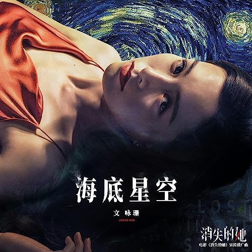

Basic Information
R.Fia is a Chinese singer-songwriter, electronic music producer, and DJ. She graduated from New York University with a degree in Music Composition. Her notable works include 《红楼雨》Crimson Pavilion in Rain and 《What’s Your Fantasy》. She studied voice with Grammy Award winner Nicole Zuraitis and composition/music production with Grammy Award winner David "Swagg R’Celious" Harris. R.Fia is known for fusing Eastern aesthetics with electronic music, exploring the boundaries of sound through her experimental approach.
She composed, arranged, and produced the opening theme song 《焰》Flame (performed by Curley G / Xilin Nayi Gao) for the hit Chinese television drama 《春花焰》Kill Me Love Me. She wrote the lyrics and music for 《海底星空》Starlit Ocean (performed by Janice Man), the promotional song for the 2023 box office hit film 《消失的她》Lost in the Stars, which grossed $486.2 million. She composed, wrote, arranged, mixed, and performed 《You Made It》 for the television series 《星辰大海》Star of Ocean, starring Liu Tao. She performed 《藏》Hidden, the theme song for the fantasy film 《蜀山降魔传》Zu Warriors: Demon Slayer. She also arranged a new version of 《小薇》Xiao Wei, performed by Victor Wong and Huang Pin-Yuan, for the variety show 《来看我们的演唱会》Welcome to Our Concert. She has collaborated with numerous well-known artists including Xu Song, Joker Xue, Shang Wenjie, Landlord’s Cat, Jess Lee, Yang Zi, Liu Xijun, and Ping An.
With an ethereal voice, exquisite melodies, and visually evocative arrangements, everything comes together to create R.Fia's distinctive personal style.
| Name | R.Fia（Feifei Ren) IG: R.Fia2077 | Profession | Singer-Songwriter · Electronic Music Producer · DJ |
|---|---|---|---|
| Notable Works | Crimson Pavilion in Rain (《红楼雨》), What's Your Fantasy, Can I Be With You | Collaborated Artists | Xu Song, Joker Xue, Janice Man, Curley G |
| Music Genres | Pop, Electronic, Chinese-style Electronic | Education | M.M. in Music Composition, New York University |
| Current Location | New York, United States |


Representative Works
《红楼雨》 (Crimson Pavilion in Rain) is an original electronic piece in the Guofeng Melodic Dubstep style, composed and arranged by R.Fia (Ren Feifei). The track combines oriental aesthetics with a modern rhythmic sensibility. As one of the few female electronic music producers in this field, her work stands out and was successfully selected for the annual compilation VOL.5 of the renowned domestic electronic music label CEM Records, making it the only representative piece by a female producer in the compilation. The track also received a featured recommendation on the NetEase Cloud Music homepage, sparking widespread discussion and acclaim on the platform.
Written in classical Chinese and based on the traditional six-tone scale, the song features instruments like xiao, guzheng, and bianzhong. It tells a tragic love story set in ancient Jiangnan, where a woman and her warrior husband are ultimately parted by war and fate.
The arrangement evolves with the narrative—starting with the woman's poetic longing and shifting to the battlefield from the man's perspective. Through expressive vocals, vivid storytelling, and cinematic production, "The Crimson Pavilion in Rain" delivers an immersive listening experience that feels like a musical film.
Listen to the song on Spotify
《What's your fantasy》 is a modern synthpop track written, composed, arranged, and performed by R.Fia.
Born from a low point in her life, the song reflects on the quiet power of fantasy—the little dreams we carry with us, even in our darkest moments. Some are distant, some within reach: watching stars by the sea, holding someone close, chasing a sky of your own.
Born from a low point in her life, the song reflects on the quiet power of fantasy—the little dreams we carry with us, even in our darkest moments. Some are distant, some within reach: watching stars by the sea, holding someone close, chasing a sky of your own.
These fragments of longing become light in the fog, reminding us that even when life feels uncertain, there’s always something worth moving toward.
Listen to "What's Your Fantasy" on Spotify
《Can I Be With You》 is a cross-border collaboration between R.Fia and a Korean musician. As lyricist and composer, R.Fia explores the quiet ache of restrained love—when feelings run deep but remain unspoken.
The song captures the emotional tension between longing and hesitation, where tenderness coexists with distance. Like a calm ocean hiding an inner storm, it speaks to the beauty and heartbreak of holding back, of loving without asking for more.
Listen to "Can I Be With You" on Spotify
《海底星空》"海底星空" is the promotional song for the movie Lost in the Stars (Chinese: 消失的她) . The song was written and composed by R.Fia, arranged by Manjie Babycloth, and performed by Janice Man. It was released on July 2, 2023. Lost in the Stars is a 2022 Chinese mystery film. The film premiered at the Hainan International Film Festival on 25 December 2022 and was released theatrically in China on 22 June 2023.
Listen to "海底星空" on Spotify 《再见完美主义》 It is R.Fia (Ren Feifei)'s first full-length original album, released in 2021 (English title Goodbye Perfectionist). The album includes a total of 9 tracks, featuring a diverse yet cohesive musical style, showcasing her creative depth in electronic and pop music. The album was co-produced by her and top-tier domestic musicians, including Liu Zhuo, and received unanimous acclaim from both music critics and listeners, further solidifying her professional standing among independent musicians.

《把你抓进梦境》 It is R.Fia (Ren Feifei)'s pop-electronic EP, which quickly gained popularity after its release. Over 6,000 Douyin (TikTok China) users selected it as background music for short video creations, sparking a platform-wide trend. The work also climbed the NetEase Cloud Music Rising Chart, becoming one of her iconic hits and further cementing her influence in the electronic pop genre.

Performance Experience
- Performed at notable New York venues including The Delancey, Aura, The Rose, Noflex, and Althea’s Hideaway.
- Participated in XHIBIT: A Community Arts Salon, a benefit concert supporting homeless youth in New York (100% of ticket proceeds donated).
- Participated in XHIBIT: A Community Arts Salon, a benefit concert supporting homeless youth in New York (100% of ticket proceeds donated).
- Invited by the Kenya Tourism Board as the lead performer for an official promotional video filmed in Africa.
Other Experiences

During the recurring pandemic in the spring of 2022, Tencent Music Entertainment Group launched a large-scale public welfare online concert project.——《春天不打烊音乐会》，The aim was to convey warmth and hope to the public through music and boost morale in the fight against the pandemic. The concert brought together numerous talented musicians with diverse styles and featured public welfare performances via online livestreams, providing ongoing companionship and spiritual solace to audiences staying at home.
As a highly regarded independent electronic musician，R.Fia Feifei Ren was invited to participate in this charity concert, representing the unique voice of contemporary female electronic creators on the public welfare stage. During the livestream, I performed some of my signature works, delivering a highly immersive and healing performance with vivid electronic arrangements and an ethereal voice. My music seamlessly blends Oriental aesthetics with cyberpunk elements, making it one of the highlights of the evening.
This livestream was broadcast through QQ Music, 全民K歌, and Kugou Music and other platforms simultaneously，with a total audience of over 10,000 viewers.，The live chat and comment sections were buzzing with interactions, with many viewers commenting, "Listening to her music feels like traveling to a futuristic Orient" and "This is the first time I've been moved by electronic Chinese-style music."
R.Fia's performance on the charity stage not only showcased her musical professionalism and live performance charisma but also reflected her sense of social responsibility as a public figure, further enhancing her influence and recognition among younger audiences.


R.Fia Ren Feifei was invited to participate in the annual special project "If We Wrote 2021 as a Song" launched by China Media Group. This project aimed to reflect on the societal changes and the emotions of the times in China over the year through the form of music, bringing together several representative musicians to collectively compose a musical memory of the year for the people.
In this project, R.Fia performed her original song 《旗》 — a piece that not only showcased her signature ethereal and delicate vocal style but also conveyed a profound expression of unity, faith, and the spirit of the times through its lyrics and melody. The song, with its grand yet warm arrangement, evoked a deep resonance among listeners, reflecting the intertwining experiences of the pandemic, perseverance, and hope.
As a representative of the new generation of independent musicians, R.Fia's participation not only added a distinctive electronic touch to the entire project but also reflected her cross-genre integration and her music creation philosophy, which balances artistic expression and social responsibility.